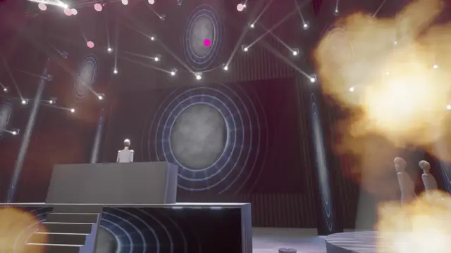
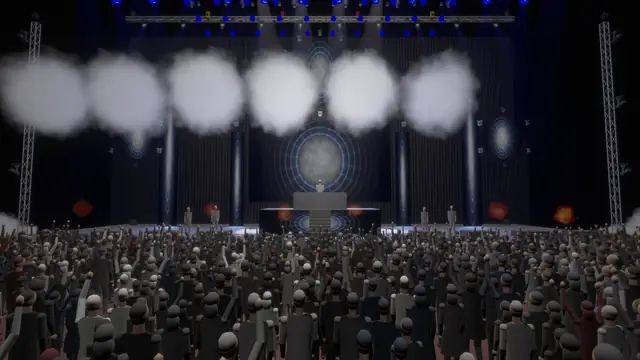
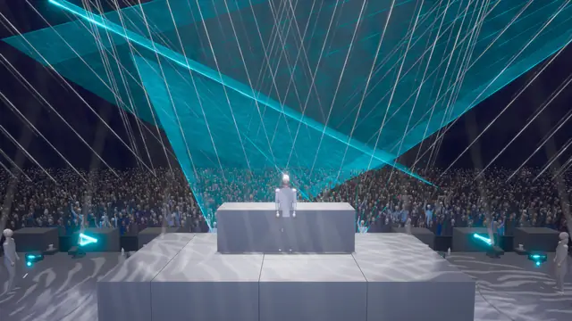

LampOff Studio · Скоро
Версия для компьютера готовится.
LampOff Studio открывает проекты LampOff в Windows и macOS в реалистичной 3D-сцене: лучи в haze, gobo, лазеры, пламя, CO2 и LED-экраны. Дата выхода будет объявлена на этой странице.
Первый взгляд
 Концертная сцена: лазеры, CO2 и зрители
Концертная сцена: лазеры, CO2 и зрители
Что умеет Studio








Из рабочей версии LampOff Studio; финальная версия может отличаться.
- Платформы
- Windows, macOS
- Статус
- Готовится
А пока мобильное приложение LampOff есть для Android, iPhone и iPad:
Вопросы: lampoff.info@gmail.com